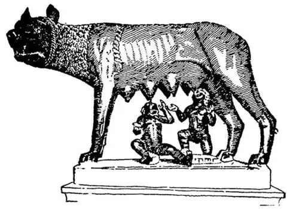

16
A Bad Beginning
邪恶的开端

HAVE you ever heard of the Seven-League Boots, the boots in which one could take many miles at a single step?
Well, there is a still bigger boot; it is over five hundred miles long, and it is in the Mediterranean Sea.
No, it's not a real boot, but it would look like one if you were miles high in an airplane and looking down upon it.
It is called Italy.
Something very important happened in Italy, not long after the First Olympiad in Greece. It was so important that it was called the Year 1, and for a thousand years people counted from it as the Greeks did from the First Olympiad and as we do now from the birth of Christ. This thing that happened was not the birth of a man, however. It was the birth of a city, and this city was called Rome.
The history of Rome starts with stories that we know are fairy tales or myths in the same way that the history of Greece does. Homer told about the wanderings of the Greek, Odysseus. A great many years later a poet named Virgil told about the wanderings of a Trojan named Æneas.
Æneas fled from Troy when that city was burning down and started off to find a new home. Finally after several years, he came to Italy and the mouth of a river called the Tiber. There Æneas met the daughter of the man who was ruling over that country, a girl by the name of Lavinia, and married her, and they lived happily ever after. The children of Æneas and Lavinia ruled over the land, and they had children, and their children had children, and their children had children, until at last boy twins were born. These twins were named Romulus and Remus. Here endeth the first part of the story and the trouble begins, for they did not live happily ever after.
At the time the twins were born, a man had stolen the kingdom, and he feared that these two boys might grow up and take his stolen kingdom away from him. So he put the twins in a basket and set them afloat on the river Tiber, hoping that they might be carried out to sea or upset and be drowned. This, he thought, was nearly all right, so long as he didn't kill them with his own hands. But the basket drifted ashore instead of going out to sea or upsetting, and a mother wolf found the twins and nursed them as if they were her own babies. A woodpecker also helped and fed them berries. At last a shepherd found them and brought them up as if they were his own sons until they grew up and became men. This sounds a good deal like the story of Paris who was left out to die and was found and brought up by a shepherd also.

Romulus and Remus with the wolf （和母狼在一起的罗慕洛、瑞摩斯）
Each of the twins then wished to build a city. But they could not agree which one was to do it, and in quarreling over the matter, Romulus killed his own twin brother Remus. Romulus then built the city by the Tiber River, on the spot where he and his brother had been saved and nursed by the mother wolf. Here there were seven hills. This was in 753 B.C., and he named the city Roma after his own name, and the people who lived there were called Romans. That is why, ever afterward, the Roman kings always said they were descended from the Trojan hero Æneas, the great-great-great-grandfather of Romulus.
Don't you believe this story? Neither do I. But it is such an old, old story everyone is supposed to have heard it even though it is only a legend.
In order to get people for the city which he had started, it is said that Romulus invited all the thieves and bad men who had escaped from jail to come and live in Rome, promising them that they would be safe there.
Then as none of the men had wives, and there were no women in his new city, Romulus thought up a scheme to get the men wives. He invited some people called Sabines, who lived nearby, both men and women, to come to Rome to a big party.
They accepted, and a great feast was spread. In the middle of the feast, when everyone was eating and drinking, a signal was given, and each of the Romans seized a Sabine woman for his wife and ran off with her.
The Sabine husbands immediately prepared themselves for war against the Romans, who had stolen their wives. When the battle had begun between the two armies, the Sabine women ran out in the midst of the fighting between their new and old husbands and begged them both to stop. They said they had come to love their new husbands and would not return to their old homes.
What do you think of that?
It sounds like a pretty bad beginning for a new city, doesn't it? and you may well wonder how Rome turned out—a city that started with Romulus killing his brother and that was settled by escaped prisoners who stole the wives of their neighbors. We'll see if the Romans continued to do such wicked things as their city grew older.
【中文阅读】
你曾听说过童话中的七里格靴吗？人穿上这双靴子，可以一步跨出好几英里呢！
还有一只更大的靴子，有五百多英里长，就在地中海。
当然，它并不是真正的靴子。但是，如果你坐在飞机上从离地面几英里高的空中往下看，它看上去就像只靴子。
它叫意大利。
在希腊第一个奥林匹亚德后不久，意大利发生了一件大事。这件事非常重大，以至于人们把那一年称为意大利的第一年。意大利人从这一年开始纪年，持续了一千年。就像希腊人从第一个奥林匹亚德开始纪年和我们从耶稣诞生开始纪年一样。不过，这件大事并不是哪个人诞生了，而是一个城市诞生了，这个城市叫罗马。
和希腊历史一样，罗马历史是从神话故事开始的。荷马讲述了希腊英雄奥德修斯的流浪故事。很多年以后，一个名叫维吉尔的诗人讲述了一个名叫埃涅阿斯的特洛伊人的流浪故事。
特洛伊城被烧毁时，埃涅阿斯逃离了那里，开始寻找新的家园。经过几年的漂泊，他最终来到了意大利台伯河的河口处。在那儿他遇见了此地统治者的女儿，一个名叫勒维妮娅的姑娘，并娶她为妻，从此以后过上了幸福的生活。后来，埃涅阿斯和勒维妮娅的孩子统治着这块土地，他们的孩子有了自己的孩子，孩子的孩子也有了孩子，孩子的孩子也有了孩子，直到最后一对孪生兄弟出生了，一个名叫罗慕洛，一个名叫瑞摩斯。到这里，故事的第一部分就结束了，而不幸却开始了，因为他们从此以后再没过上幸福的生活。
在双胞胎出生的时候，有个人窃取了王位，他担心这两个男孩长大后会把王位夺回去，于是，他把双胞胎放在一个篮子里，丢进了台伯河里任他们随水漂流，他 希望篮子会顺水漂到大海，或干脆翻在河里，把他们淹死。他认为只要他没有亲手杀死他们也就没什么大不了的。但是，篮子既没有漂到海里，也没有翻在河里，而是漂到了岸上，有一只母狼发现了双胞胎，还把他们当做自己的孩子一样给他们喂奶，有只啄木鸟也帮着给他们喂浆果。最后有个牧羊人发现了他们，把他们当做自己的儿子抚养成人。这个故事听上去很像前面说过的帕里斯的故事，他也是被丢弃在荒野等死，后来被一个牧羊人发现并抚养长大。
这对双胞胎长大后各自都想建一座城市，但是由谁去建城呢？俩人互不让步，争执不休。罗慕洛杀死了自己的孪生兄弟瑞摩斯。于是，罗慕洛在台伯河边建起了一座城市，地点就在母狼救起这对孪生兄弟并喂养他俩的地方，那里有七座小山。那是公元前753年，他以自己的名字将此城命名为罗马，城里的居民就称为罗马人。这就是为什么从此以后，罗马的国王们总是说他们是特洛伊英雄埃涅阿斯的后裔——因为他是罗慕洛的曾曾曾祖父。
你不相信这个故事吧？我也不相信。虽然它只是一个传说，但是这是一个很古老、很古老的故事，大概每个人都听说过。
据说，为了让人们来他创建的城市定居，罗慕洛欢迎所有越狱的盗贼和罪犯来罗马居住，并保证他们在罗马的人身安全。
当时这些男人都没有妻子，这座新城里也没有女人，于是罗慕洛想出一个诡计帮这些人能娶上妻子。他邀请了一些住在附近地区的萨宾人，包括男人和女人来罗马参加一个盛大的宴会。
他们接受了邀请，盛宴也准备好了。宴会进行到一半，当所有人都在大吃大喝的时候，突然有人发出一个暗号，罗马人立即动手，每个人抢了一个萨宾女人，把她们当做妻子带跑了。
萨宾的男人们立即召集在一起，要和抢了他们妻子的罗马人开战。当两军刚打起来时，萨宾女人们忽然跑出来，站在正交战的前任丈夫和现任丈夫之间，请求双方停战。她们说自己已经爱上了现任丈夫，不愿意回到她们原来的家了。
你怎么看这件事？
一个新城就这样开始建起来，似乎够糟的，不是吗？你很可能在想罗马以后会变成什么样子呢——这个城市以罗慕洛杀死自己的兄弟为开端，接着住进了逃犯，后来他们又抢了邻居的妻子。我们倒要看看，在罗马城以后的历史中，罗马人是不是还会继续做那些邪恶的事情。